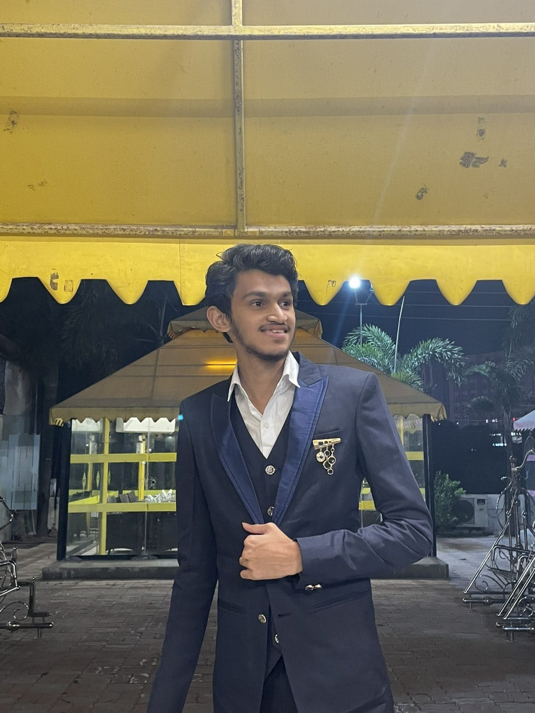

Hello, I'm
Vraj Saraiya
MCA Student | Full Stack Developer
Building MERN & Java Based Applications
I build responsive, real-world applications with a focus on clean user experience, scalable backend logic, and practical problem solving.

I am an MCA student passionate about building real-world web applications and solving problems through programming. I specialize in full-stack development using the MERN stack (MongoDB, Express, React, Node.js) along with Java and Python. I enjoy designing responsive user interfaces, developing RESTful APIs, and working with databases to create scalable applications. I have built projects like a food delivery platform, complaint management system, and CRUD-based applications that demonstrate my practical knowledge. Currently, I am improving my Data Structures & Algorithms, exploring Docker, and learning system design concepts to become a well-rounded software developer. I am always eager to learn new technologies and build impactful solutions.
I've built a strong foundation in programming and full-stack web development during my MCA journey. I enjoy solving real-world problems using languages like Python and Java, and I'm constantly exploring new tools and technologies to improve my skills.
Plate2Door is a full-stack MERN-based food delivery platform designed to solve real-world challenges in traditional food ordering systems such as lack of real-time tracking, inefficient order management, and limited user experience. The platform allows users to browse food items, add them to cart, place orders, and track deliveries in real time, while providing a powerful admin dashboard to manage food items, categories, orders, and users efficiently. It includes secure authentication using JWT, Stripe payment integration, coupon system, bookmarks, and a fully responsive UI for seamless experience across devices. The system is built with scalability and performance in mind using React.js, Node.js, Express.js, and MongoDB, and features real-time order tracking, role-based access, cart and checkout functionality, and secure online payments.
Browse food, manage cart, apply coupons, and track deliveries in real time with a responsive interface.
Manage food items, categories, orders, and users efficiently from a powerful dashboard.
I build responsive and dynamic web apps using MERN stack and Java-based backend services. Clean code, performance, and scalability are my priorities.
I create engaging user interfaces using React.js, JavaScript, and modern CSS frameworks. Focused on accessibility and user experience.
Skilled in building RESTful APIs with Node.js, Express, and Java. Also experienced in using MongoDB and SQL for robust data management.
I write Python scripts for automation, data processing, and backend logic, boosting productivity and simplifying complex tasks.
Proficient in Core Java with hands-on experience in OOP, Exception Handling, JDBC, and Networking. I build robust backend logic and scalable applications using Java.
I use Git and GitHub for team collaboration, version control, and code reviews. Familiar with CI/CD practices and open-source contributions.
I'm currently looking for internship opportunities, freelance projects, or entry-level developer roles. If you have an idea, project, or collaboration opportunity, feel free to reach out. Let's build something amazing together!